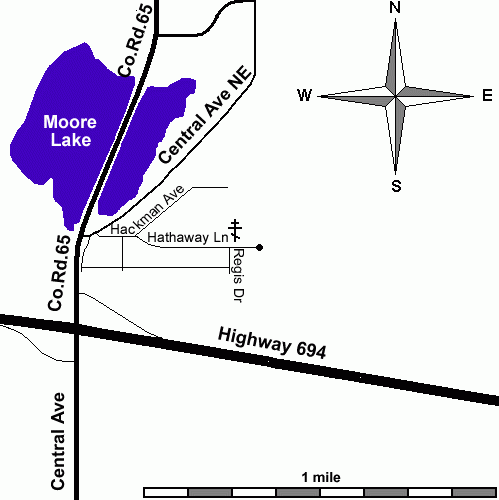

Contact & Directions
The church is on a quiet residential street in Fridley, a few miles north of downtown Minneapolis. There is no office staff; the surest way to reach us is by telephone or email.
Address
Russian Orthodox Church and Skete of the Resurrection of Christ
1201 Hathaway Lane NE
Fridley, MN 55432
Phone
(763) 744-8601
Email
rusmnch@msn.com
For baptisms, weddings, memorials and house blessings, please telephone the rector.
Open in Google Maps →Driving Directions
From Highway 694
Take exit 38. Turn north on Central Avenue / County Road 65. Stay in the rightmost lane and turn right onto Central Avenue NE, then immediately right onto Hackmann Avenue NE. At the fork, continue straight onto Hathaway Lane NE. The church is on your left at the end of the street.
Parking
Watch the parking signs: parking is permitted on one side of the street only. It is often easiest to drive to the end of Hathaway Lane, turn around, and park on the permitted side. You may also park on Regis Drive, where parking is likewise on one side of the street.

Coming for the first time?
You do not need to telephone ahead. Come on a Sunday a little before 9:30 AM, stand near the back, and stay afterwards for the meal if you can. Our visiting page answers the rest.